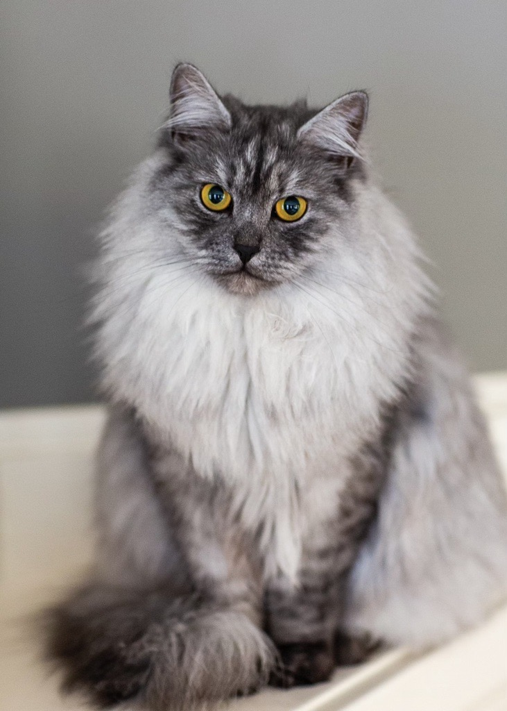
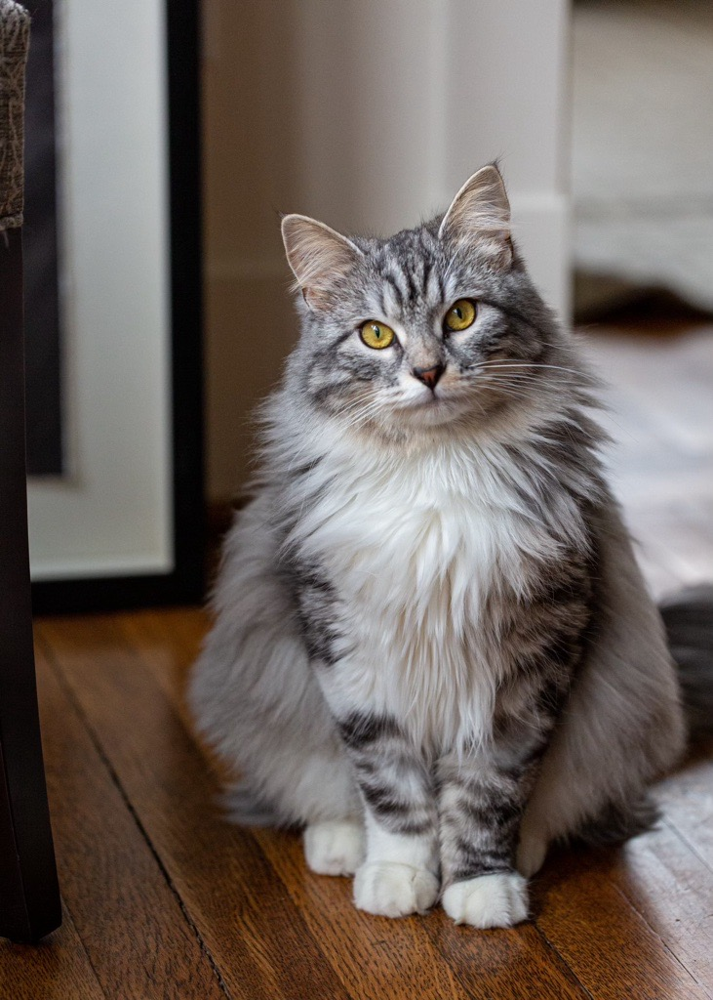

Theses are my cats on the left is snickers and on the right is socks
Hi
My name is tyler i am this many year old and i live in seattle. i love bikes, i love to ride bikes i love to fix bikes, i love evrey thing about them
Cats
I have two cats, snickers and socks both are pictured above. they are both very sweet and cute

Snickers (see picture above)
snickers also known as snick is 6 years old and is a siberean bread. he is very friendly and human like he loves to sit at the dinner table with us
snickers favorite foods:
snickers favorite activites:

socks
socks is also a sibearean cat and is one year younger than snickers. she is much more cat like than snickers and is kinda jumpy, but she is also very sweet